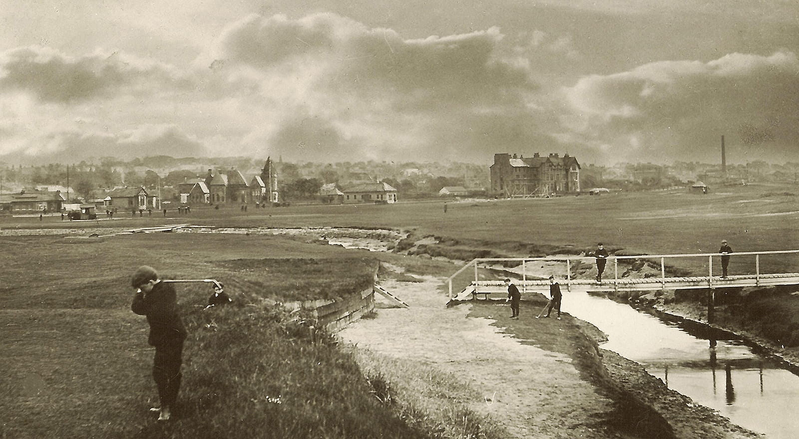

Explore
Carnoustie

History of the
Town
The Dibble Tree
Shipwrecks
Tourism and the Railway
Coastline
Nature
The Dibble Tree
Shipwrecks
Tourism and the Railway
Carnoustie's
Golfing Heritage
The Dibble Tree
Shipwrecks
Tourism and the Railway
Town Map